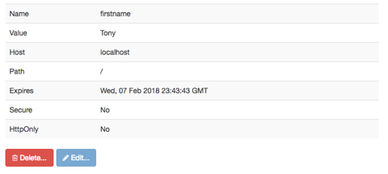

Cookies in Registration
Introduction
Cookie? I know, it's a strange name for a small bit of code, but it is what it is. If you have completed your assigned reading you will already know that a PHP cookie is simply a small text file that is created by the server and stored in the browser. As with most data it is comprised of a number of name - value pairs. What is unique is that when the browser visits the web site that created the cookie, the cookie is automatically sent back to the server as part of every "http request" until the cookie is destroyed.
Cookies are small. The maximum size they can be is 4K (4 kilobytes). In addition, they are typically plain text and can be changed in the browser. As a result, they should NEVER be used for sensitive information!
Types of Cookies
Without getting carried away, you should know that there are several types of cookies:
- Persistent Cookie
- A "persistent" cookie is one which lasts beyond the current set of interactions between the browser and the server. These cookies are given a life span at the time they are created. That life span can be increased or decreased by the PHP code on the server. The means of setting the lifespan is by using the expiry value in the
setcookie()function. - Session Cookie
- A "session" cookie is created automatically by the server when a new session is created. The cookie typically has a name of "PHPSESSID" and a value of a unique ID consisting of a string of alphanumeric characters. These cookies typically are destroyed when the session ends. Typically there are three main ways of ending a session:
- The browser window is closed.
- The session "times out" due to inactivity. This time factor can be altered but typically is around 24 minutes.
- A PHP
session_destroy()function is called, perhaps at the end of a logout procedure or at the end of a "check-out" process.
There are other variations of cookies, but to one extent or another they are variations of the persistent cookie.
Using a cookie
Have you ever registered with a web site and when you return to the site sometime in the future, the site somehow shows your name, even when you haven't logged into the site? Chances are it is a cookie at work. It is this very thing that we will do in this activity, just to show how to set a cookie, read a cookie and use the value that was read from the cookie. Later, we will extend the life of the cookie whenever the same site visitor logs in to the site.
Set the Cookie
We will "set" or "create" the cookie when the individual registers with the site.
- Open the "accounts" controller.
- Scroll down until you are near the bottom of the registration process.
- We want to set the cookie, only when we are sure the registration was successful, so I will create an empty line inside the
If - elsewhere I check if the registration was a success. - To create the cookie I use the
setcookie()function and provide it with the data I desire. In our example we will provide four parameters to the setcookie function:- The first and only required parameter is a name. In this instance I will name my cookie "firstname".
- The second parameter is a value. In this case the value will be the variable that holds the registrant's first name (e.g. $firstname).
- The third parameter is the "expiry", or the life of the cookie. We will set it for one year. (NOTE: normally you would use a calculation of multiplying seconds to equal a year, but using the
strtotime()function and passing a value of+ 1 yearis much less writing and easier to understand). - Finally, the fourth and last parameter is the path of the cookie. This parameter tells the server what folders within the web site have access and can "see" the cookie. We will set the path to "/" which means the cookie will be visible to the entire web site.
- When done, the line and its surrounding code could look something like this:
// Check and report the result
if ($regOutcome === 1) {
setcookie('firstname', $firstname, strtotime('+1 year'), '/');
$message = "<p>Thanks for registering $firstname. Please use your email and password to login.</p>";
include '../view/login.php';
exit;
} .....
Time to Test
- Save the controller after making sure no code errors are being shown.
- Run the acme site and navigate to the registration view.
- Register a new site visitor.
- Assuming you have the "Web Developer" tool installed in your browser, you can click it, then click the "Cookies" tab, and then click "View Cookie Information".
- A new tab will open and the cookies being used for the current site will be shown. Assuming I registered a new user with the first name of "Tony" and I registerd Tony on February 7th, 2017 then my cookie information should look similar to the image below:
 - You will notice that the cookie name is 'firstname', it has a value of 'Tony', it expires 1 year in the future and its path is "/". Everything is exactly as it should be.
Put it to Work
Finally, we will use the cookie to do what was described earlier, we will greet the site registrant by name when he or she returns to the acme site.
- Go to the acme controller "index.php" at the root of the acme site.
- Somewhere prior to the beginning of the switch control structure, check for the existence of the 'firstname' cookie in an
if()test. - If the cookie exists, store it's value into a variable. Use a variable name to indicate that it came from the cookie (e.g. $cookieFirstname). Remember: This is input from the browser so the string should be filtered and sanitized!
- The resulting code could look like this:
// Check if the firstname cookie exists, get its value
if(isset($_COOKIE['firstname'])){
$cookieFirstname = filter_input(INPUT_COOKIE, 'firstname', FILTER_SANITIZE_STRING);
}
- Save the controller.
- Go the acme "home" view.
- Find in the code where the "My account" link is located.
- To the left of the link add a PHP code block that checks if the variable holding the cookie firstname value exists, and if so echo it back with a brief welcome message, (e.g. Welcome Tony).
- When done, the code could look like this:
<?php if(isset($cookieFirstname)){
echo "<span>Welcome $cookieFirstname</span>";
} ?> - Use CSS to make sure there is a space between the welcome message and the "My Account" link.
- Save all of the files.
- Return to your browser and reload the acme site.
- If things worked, you should see your welcome message on the acme home view.
- This code could be repeated in each controller (to check and collect the cookie value) and in each view (to display the welcome message). But don't. For now just leave the test in the acme controller and the cookie display in the acme home view (unless you header is modularized in which case it is already in all views).
What's Next?
In the "Login Process" activity we will create a session and see the session cookie at work. In the mean time you now have some minimal exposure to PHP cookies, how to create them, how to read them and how to use them.
Video Demonstration
As always, keep in mind that variable names in the activity and video may be different than yours.